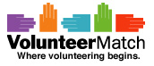
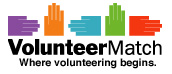

Food Bank For New York City has been the city's major hunger-relief organization working to end hunger throughout the five boroughs for more than 30 years. Nearly one in five New Yorkers relies on Food Bank for food and other resources. Food Bank takes a strategic, multifaceted approach that provides meals and builds capacity in the neediest communities, while raising awareness and engagement among all New Yorkers. Through its network of more than 1,000 charities and schools citywide, Food Bank provides food for approximately 62.5 million free meals per year for New Yorkers in need.